This page contains my academic and personal projects with detailed descriptions, screenshots, and skills used.
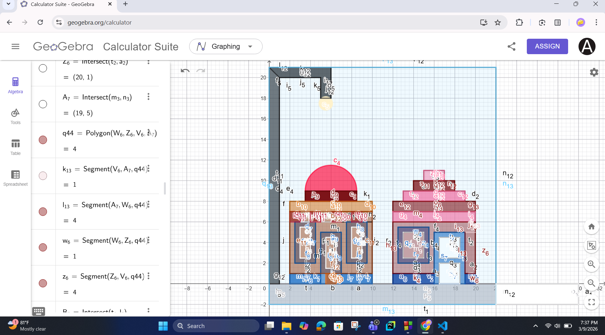
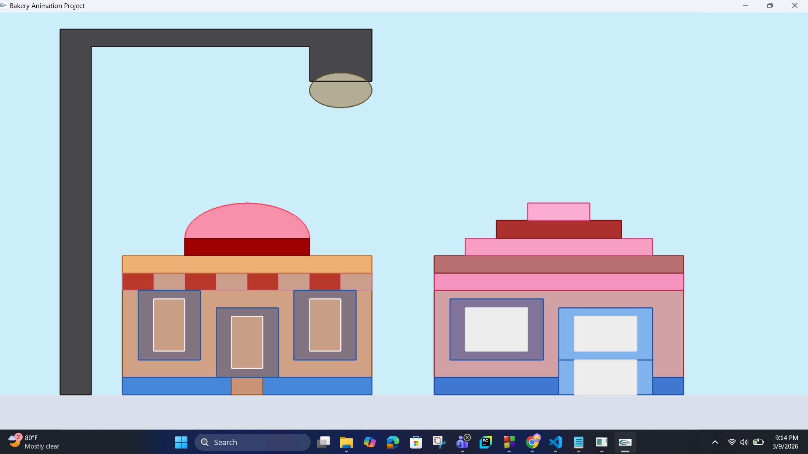
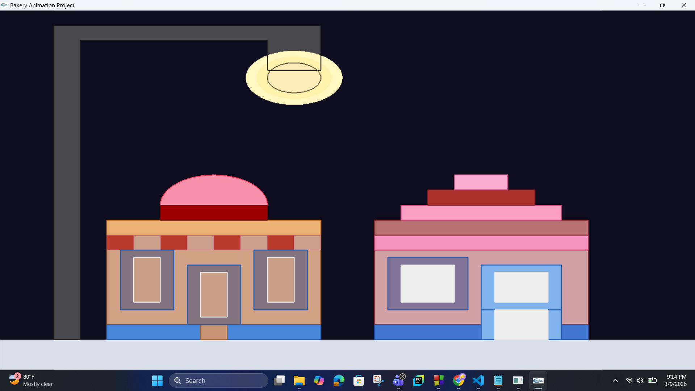
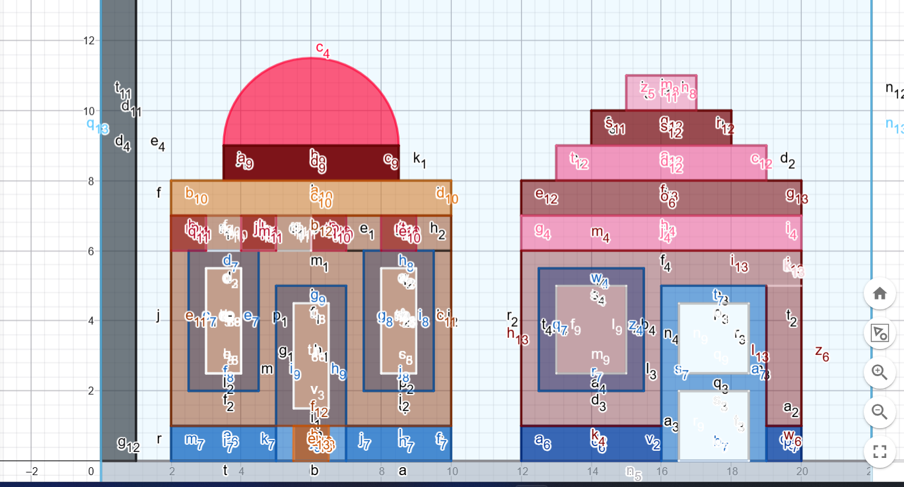
This project is a 2D OpenGL street scene that presents two shop structures and a large street lamp in a visually organized environment. I first designed the structure layout in GeoGebra by planning the coordinates of the shops, roof sections, lamp body, windows, doors, and ground area. After completing the coordinate planning, I implemented the full scene in C++ using OpenGL and GLUT. The project helped me practice how mathematical planning can be used to create graphics scenes accurately in programming.
A major focus of this project was interactivity and scene variation. The lamp can be switched on and off using the keyboard, and the background changes between day and night modes depending on the lamp state. I also added a glow animation effect so that the lamp light looks more dynamic instead of remaining static. This project improved my understanding of primitive-based drawing, shape composition, color layering, and how separate components can be combined to form a complete environment.
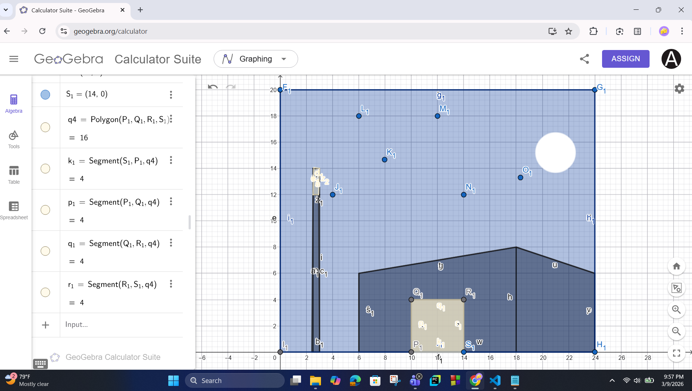
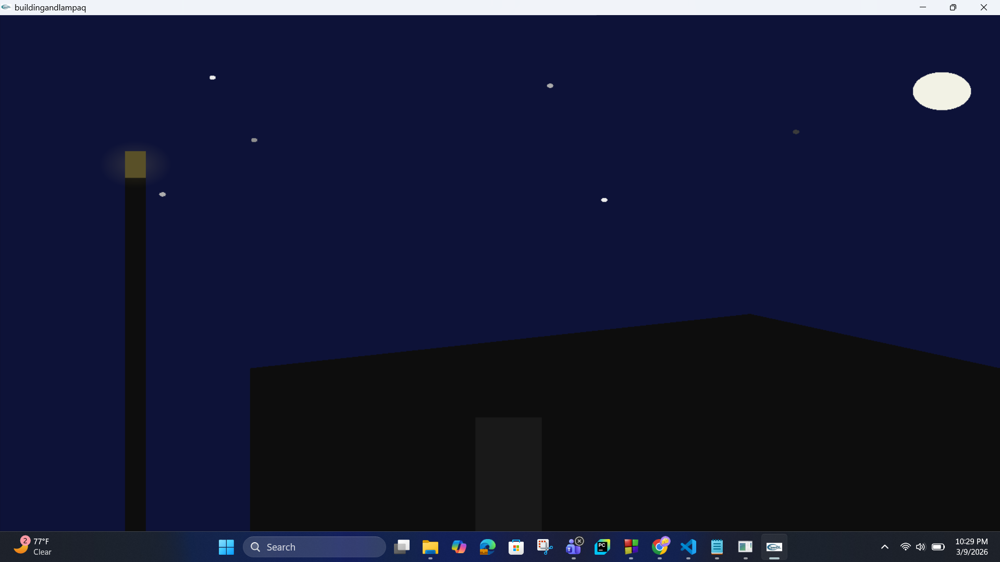
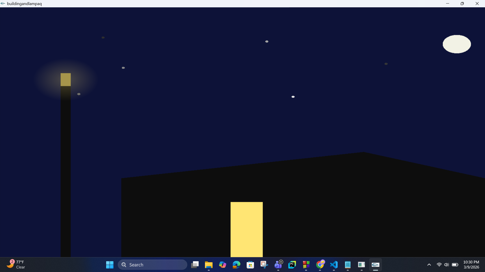
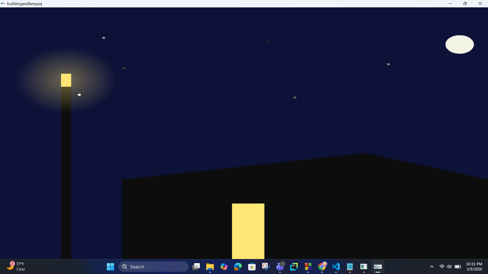
This project is a 2D nighttime street scene that focuses on lighting effects, silhouette design, and simple animation. The scene contains a tall street lamp, a building silhouette, a moon, and animated stars in a dark sky background. I first used GeoGebra to prepare the coordinate layout of the lamp, sky objects, and building structure, then translated the design into C++ using OpenGL and GLUT.
The main purpose of this project was to explore how light can change the appearance of a scene. The lamp can be turned on or off, and the building window can also be controlled separately. I added multiple lamp intensity levels so that the brightness can be adjusted from low to high. The glow around the lamp uses alpha blending to create a soft lighting ring, while the stars fade in and out over time to make the night environment feel more alive. Through this project, I practiced scene lighting logic, transparency effects, interactive controls, and timer-based animation.
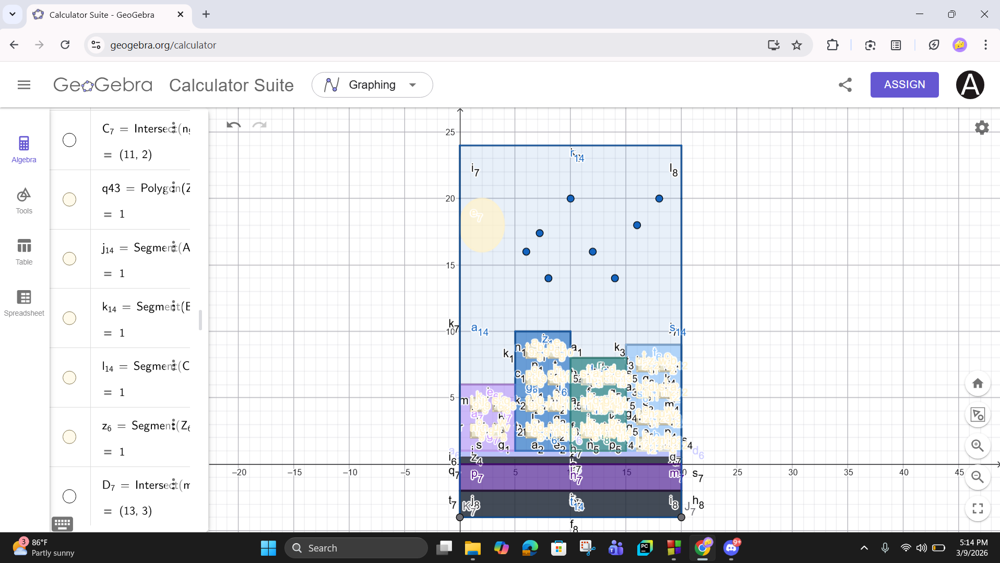
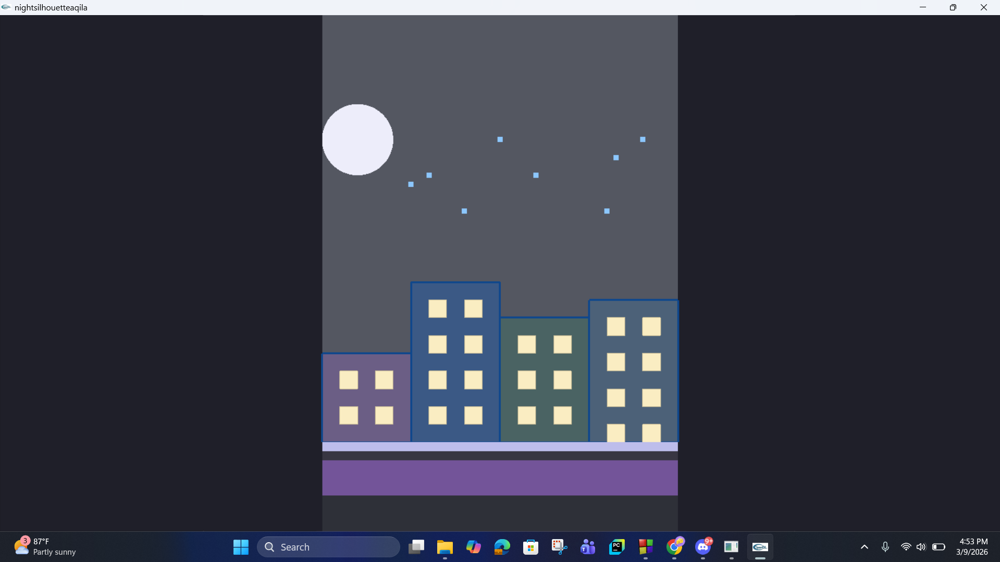
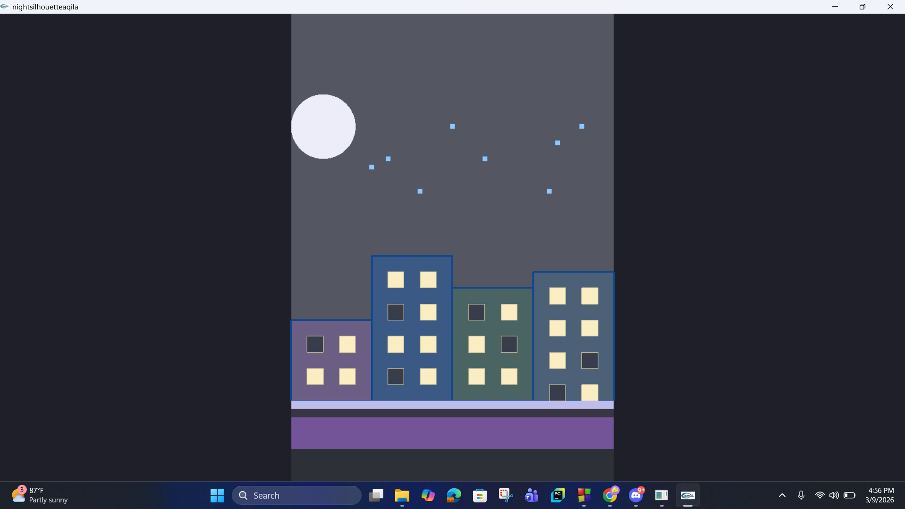
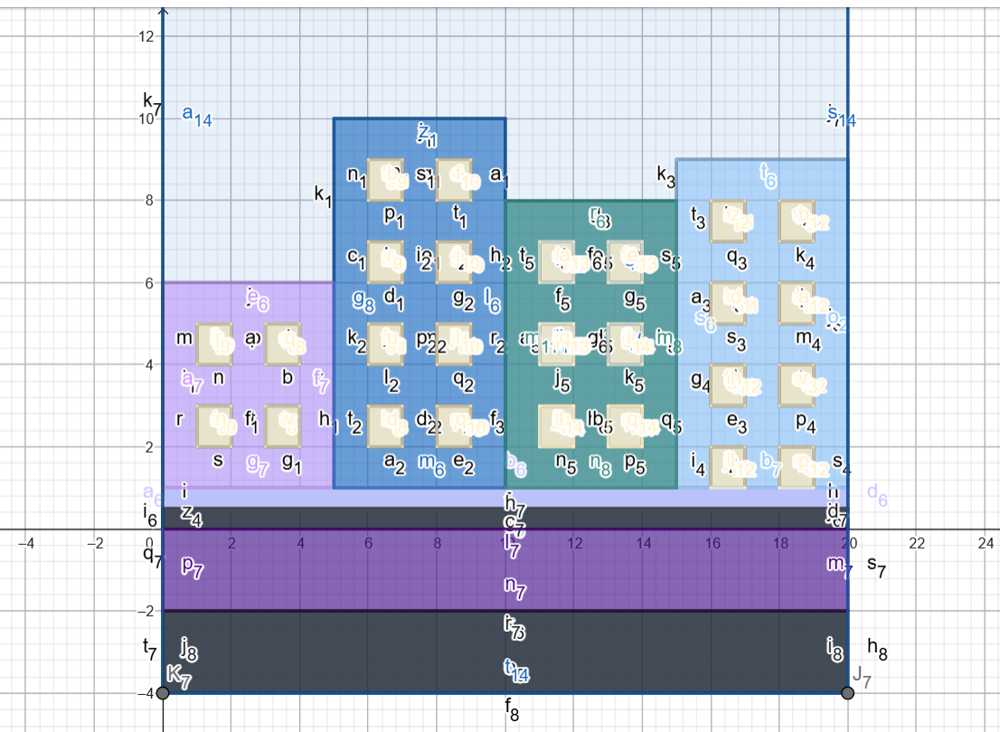
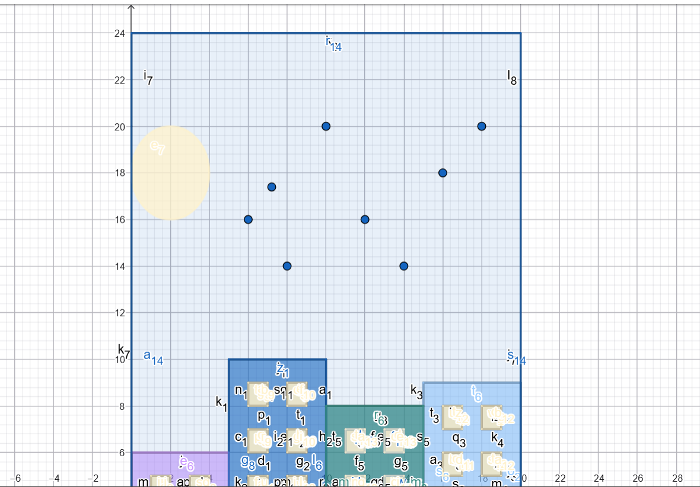
This project is a 2D night city skyline visualization built with OpenGL. The scene includes four separate buildings with different heights, a moon, blinking stars, and layered foreground strips that create a road-like and urban base area. Before coding the final output, I planned the coordinates of the buildings, windows, moon, stars, and ground sections in GeoGebra. This step helped me maintain proper alignment and proportions while drawing the scene in C++ with OpenGL and GLUT.
The most important interactive part of this project is the window control system. Each building window is mapped to a letter from A to Z, which means the user can toggle individual windows on or off directly from the keyboard. This made the project more dynamic and also gave me practice in using arrays and state management for graphics interaction. In addition, selected stars blink continuously through timer updates, which adds simple animation to the skyline. This project improved my skills in scene organization, keyboard mapping, repeated object drawing, and preserving aspect ratio through reshape logic.